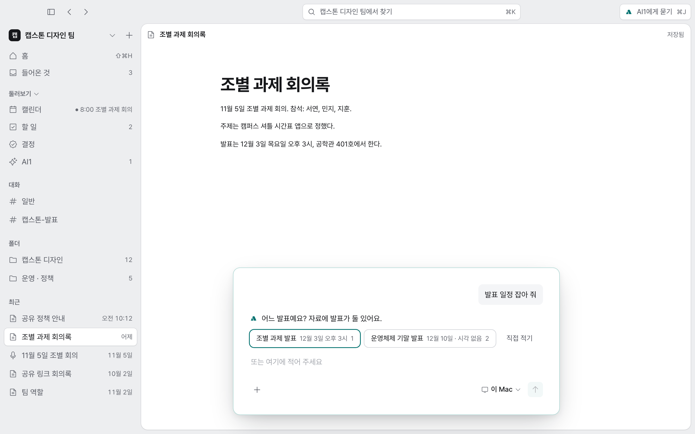
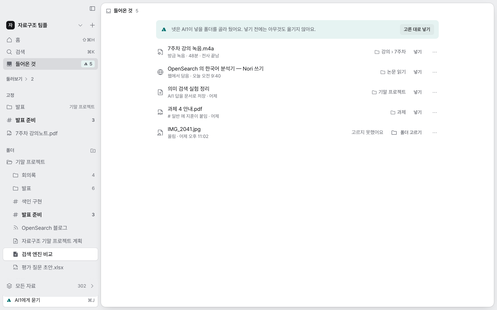
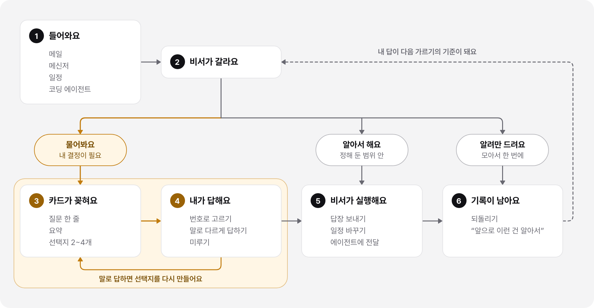
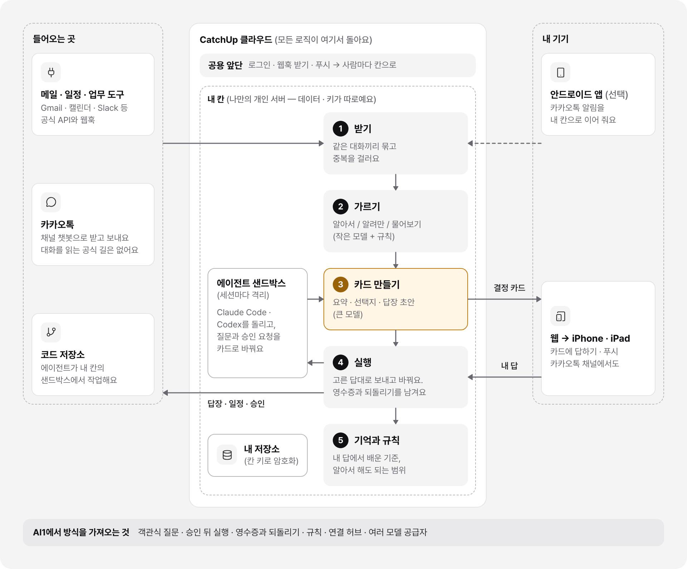

docs/design-system으로 그렸어요들어오는 건 비서가 다 읽고, 나는 카드에 번호로 답만 해요
메일 · 메신저 · 일정 · 코딩 에이전트에서 오는 것을 클라우드의 비서가 먼저 읽고 갈라요. 알아서 할 수 있는 건 하고, 알려만 줄 건 모으고, 내 결정이 필요한 것만 카드 한 장으로 올려요. Slack의 캐치업과 Claude Code · Codex의 객관식 질문을 한 화면으로 합친 모양이에요. 아직 구현 전이고, 화면 속 이름 · 숫자는 예시예요. v2에서는 소유자 답에 맞춰 이름(CatchUp) · 디자인 시스템 · 구조(유저마다 개인 클라우드 서버) · 카카오톡 길을 고쳤어요. 전체 설계와 계획은 같은 폴더의 design.md · plan.md에 있어요.
카드 한 장이 결정 하나예요
어디서 왔든 같은 모양이에요. 질문 한 줄, 요약 세 줄, 선택지 2~4개, 고르면 일어나는 일. 메일도 일정도 코드 승인도 같은 손동작으로 끝나요.
객관식이 기본이고, 주관식은 늘 열려 있어요
번호 키나 한 번 누르기로 답해요. 보기가 마음에 안 들면 카드 아래 입력창에 말하고, 비서가 선택지를 다시 만들어 와요.
답할수록 카드가 줄어요
같은 답이 쌓이면 '앞으로 알아서 할까요?'를 물어요. 맡긴 일은 기록에 남고 되돌릴 수 있어요. 돈과 운영 데이터는 늘 물어봐요.
결정을 어디서, 몇 개씩 받을지가 갈림길이에요
한 사람이 아침과 틈날 때 5~15개쯤 정하는 쓰임새를 기준으로 넷을 그려 봤어요. 1차는 A를 추천해요. A의 카드 안에 C의 대화를 넣고, D의 알림은 2차에 더해요. B는 A의 '목록으로 보기'로 남겨요.
카드가 한 장씩 올라와요
핵심 한 수 · 화면에 결정 하나만. 답하면 다음 장이 올라와요
좋은 점
- 고를 것이 하나라 빨라요
- 끝이 보여요(7개 중 3번째)
대가
- 전체를 한눈에 못 봐요
- 순서를 비서가 정해요
선례 · Slack 캐치업 · Linear Triage
메일 앱처럼 골라서 열어요
핵심 한 수 · 목록이 늘 보여요. 급한 것부터 골라 열어요
좋은 점
- 전체와 순서를 내가 잡아요
- 아이패드 화면 나누기와 맞아요
대가
- 고르는 일이 하나 더 생겨요
- 읽지 않은 메일함처럼 쌓여요
선례 · Linear Inbox · GitHub 알림 · Cursor 에이전트 받은함
비서와 채팅하며 정해요
핵심 한 수 · 질문이 대화 속에 섞여 와요. 되묻기가 가장 자연스러워요
좋은 점
- 말로 더 묻기 쉬워요
- ChatGPT · Claude에서 익숙해요
대가
- 안 정한 것이 위로 밀려 묻혀요
- 몇 개 남았는지 안 보여요
선례 · Claude Code 질문 · Poke · AI1 '물어보기'
앱을 열지 않고 답해요
핵심 한 수 · 알림을 길게 눌러 그 자리에서 고르면 끝이에요
좋은 점
- 가장 빨라요
- 에이전트가 덜 기다려요
대가
- 요약과 근거를 볼 자리가 없어요
- 하루 종일 끊겨요
선례 · Cursor 모바일 알림 · Apple 우선 알림
객관식 질문과 '승인 뒤 실행'은 AI1에서 방식을 가져와요. 코드는 CatchUp에서 새로 만들어요
AI1 main(613eabb)의 코드를 읽어 확인했어요. 에이전트가 선택지 2~4개로 묻고, 사람이 승인한 것만 실행하고, 영수증으로 되돌리는 뼈대는 그대로 쓸 수 있어요. 반대로 메일 · 외부 캘린더 · 메신저 연결, 코딩 에이전트 세션 받기, '내 결정이 필요한가'를 가르는 단계, 클라우드 배포, 푸시 알림은 새로 만들어야 해요.


이미 있는 것
| 뼈대 | 코드 |
|---|---|
| 선택지 2~4개로 묻고, 답이 다음 차례로 돌아와요 | agent_loop.rs:132 ask.tsx:766 |
| 제안 → 지문 확인한 승인 → 실행, 낡으면 충돌 | agent.rs:4024 · migration 0029 |
| 실행 영수증과 되돌리기 | agent_tools.rs:1627 · migration 0060 |
| 언제 / 확인 / 하기 규칙, 같은 승인이 쌓이면 '알아서' 제안 | agent_watch.rs agent_routine.rs |
| 연결 허브와 웹훅 받기(Slack 형식 포함), 중복 거르기 | connections.rs · services/connectors |
| 여러 공급자 · 도구 부르기 · 의도 가르기, 평가 도구 | providers.rs agent_native.rs · tools/agent-eval |
| 여러 곳의 일을 한 줄로 모아 우선순위를 매겨요 | companion-hub.ts · incoming.tsx |
새로 필요한 것
| 빈 곳 | 지금 |
|---|---|
| Gmail · Google 캘린더 · Slack 개인 연결 | 내부 채널과 내부 캘린더만 있어요 |
| Claude Code · Codex 세션 받기 | codex.ts는 Codex를 모델로만 써요. Claude Code 연동은 없어요 |
| '내 결정이 필요한가' 가르기 | 홈 요약은 요약만 해요 |
| 거절과 그 이유 남기기 | rejected 상태는 있지만 쓰는 코드가 없어요 |
| 클라우드 배포와 푸시 알림 | AI1은 이 Mac 안에서만 통신해요. CatchUp은 처음부터 클라우드예요(Q2) |
| 파인튜닝한 모델 | 레포에는 평가 도구와 연구 문서만 있어요(docs/agent-decision-reference/05). 학습한 모델은 없어요 |
| 아이패드 · 아이폰 화면 | Electron 데스크톱 앱만 있어요 |
비서가 셋으로 가르고, 그중 '물어봐요'만 카드가 돼요
들어온 것은 알아서 해요 · 알려만 드려요 · 물어봐요 셋 중 하나가 돼요. 카드에 답하면 비서가 실행하고 기록을 남겨요. 내 답은 다음 가르기의 기준이 돼요. 아래 화면 장은 이 흐름의 마디를 하나씩 키운 거예요.

질문 한 줄, 요약 세 줄, 선택지 셋이 화면의 전부예요
월요일 아침에 연 첫 화면이에요. 밤사이 140개가 들어왔고 그중 7개만 카드가 됐어요. 메일 원문을 읽지 않아도 정할 수 있게 비서가 숫자와 기준을 뽑아 두고, 고르면 무엇이 나가는지 미리 보여 줘요.
캐치업
7개 중 첫 번째리브랜딩 견적, A안과 B안 중 어느 쪽으로 할까요?
- A안 1,480만 원 · 6주 — 로고와 상세 화면 5종, 수정 2번
- B안 1,150만 원 · 4주 — 로고와 상세 화면 3종, 수정 1번
- 10월에 정한 예산은 1,300만 원이고, 출시는 1월 12일이에요.
서연 님, 검토해 보니 B안으로 진행하면 좋겠습니다. 계약서 초안을 보내 주시면 이번 주 안에 확인하겠습니다.
- 위쪽 동그라미가 남은 카드예요. 어디서 온 카드인지 아이콘으로 보이고, 눌러서 건너뛸 수 있어요. 목록을 따로 두지 않아도 끝이 보여요. Slack 캐치업의 '남은 수'를 가져왔어요.
- 카드 제목은 늘 질문이에요. '견적 메일이 왔어요'가 아니라 '어느 쪽으로 할까요?'로 써요. 그 아래 요약은 세 줄까지고, 근거는 알약으로 붙어 눌러서 원문을 봐요.
- 추천은 맨 위, 케첩 빨강 테두리 하나예요. 왜 추천하는지 한 줄이 붙어요. 1~3 키로 고르고 ↵ 는 추천이에요. 선택지는 4개를 넘지 않아요(Claude Code의 2~4개 규칙).
- 주관식 입력창이 카드 안에 늘 있어요. 보기가 마음에 안 들면 여기에 말해요. 마이크로 말해도 돼요. 카드를 떠나지 않고 이어져요.
- '비서가 하는 일'은 사이드바에 있어요. 돌아가는 코딩 에이전트와 정리 작업이 보여요. 사람을 기다리는 것만 머스터드 점과 글자예요.
- '앞으로 이런 건 알아서'가 카드를 줄여요. 누르면 방금 답을 규칙으로 만들지 물어요. 미루기 S, 내가 직접 D 는 왼쪽에 조용히 있어요.
Claude Code가 묻는 것도 메일과 같은 카드로 와요
에이전트가 선택지를 들고 멈추면 그 질문이 그대로 카드가 돼요. 터미널을 열지 않고 아이패드에서 답하면 에이전트가 이어서 일해요. 방금 정한 메일 답장은 10초 동안 되돌릴 수 있게 아래에 떠 있어요.
캐치업
7개 중 두 번째결제 재시도를 어디에서 하게 할까요?
- 결제가 실패하면 3번까지 다시 시도하게 만드는 중이에요.
- 지금은 주문 화면에만 있어서, 정기 결제는 실패하면 그대로 끝나요.
- 누가, 어떤 일을 하다, 얼마나 멈췄는지가 첫 줄이에요. 에이전트가 기다리는 시간은 곧 비용이라 머스터드 점으로 알려요. 저장소와 작업 이름은 사람이 붙인 말로 써요.
- 에이전트가 한 일은 알약 세 개로 접어 둬요. 단계 · 읽은 파일 · 테스트 결과예요. 눌러야 펼쳐져요. AI1의 '한 일은 접힌 한 줄' 약속을 따라요.
- 선택지마다 값이 붙어요. 바뀔 파일 수와 걸릴 시간이에요. 코드 결정은 범위가 기준이라 설명 줄에 넣었어요.
- 고르면 생길 변경을 미리 보여 줘요. 메일 카드의 '이렇게 보내요'와 같은 자리, 같은 역할이에요. Claude Code의 선택지 미리보기(
preview)를 그대로 받아요. - 실행은 10초 뒤에 나가요. 그동안 '되돌리기'가 떠 있고, 다음 카드를 보는 데는 방해가 안 돼요. 밖으로 나가는 일(답장 · 초대)에만 써요.
가운데 한 칸만 바뀌고 나머지는 같아요
출처 줄 · 질문 · 선택지 · 입력창은 모든 카드가 같아요. 일정이면 겹친 시간, 승인이면 실행할 명령, 알려만 드리는 묶음이면 줄 목록이 가운데에 들어가요. 새 연결이 생겨도 카드 틀은 새로 만들지 않아요.
일정 — 겹친 둘을 나란히
목요일 3시에 일정 둘이 겹쳐요. 어느 쪽을 옮길까요?
- 겹친 일정 둘이 같은 크기로 나란히 서요. 새로 들어온 쪽만 테두리로 구분해요. 시간 · 이름 · 사람 수 세 줄이면 비교가 끝나요.
- 추천에는 비서가 미리 확인한 사실이 붙어요. '6명 모두 비어 있어요'처럼요. AI1의 빈 시간 찾기(
free_busy)를 써요.
승인 — 위험한 것은 한 번 더
운영 DB에 이 명령을 실행해도 될까요?
- 주문 표에 '다시 시도한 횟수' 칸을 더해요. 지우는 것은 없어요.
- 되돌리는 스크립트가 같이 들어 있고, 스테이징에는 아직 안 돌렸어요.
- 위험은 빨간 점과 한 마디로 알려요. 운영 데이터 · 돈 · 되돌릴 수 없는 일에만 써요. 카드 전체를 빨갛게 칠하지 않아요.
- 추천이 '더 안전한 길'이에요. 허용 / 거절 둘만 주지 않고 비서가 중간 길을 찾아 와요. '이번 한 번만'에는 자물쇠가 붙고, 누르면 한 번 더 확인해요. Codex의 수락 / 이번 동안 수락 / 거절에 대응해요.
- 위험한 카드는 밀어서 넘길 수 없어요. 시간이 지나도 저절로 정해지지 않아요. 아래 한 줄이 그 약속을 말해요.
알려만 드려요 — 묶음 한 장
밤사이 이런 일이 있었어요
- 정할 것이 없는 일은 한 장에 모아요. 한 줄이 대화 하나예요. 글 23개를 한 줄로 줄였다는 사실을 아래에 적어 믿을 수 있게 해요.
- 비서가 잘못 갈랐으면 '카드로'를 눌러요. 그 줄이 결정 카드로 올라오고, 이 고침이 다음 가르기의 기준이 돼요.
- '다 봤어요' 하나로 닫아요. 줄마다 읽음 표시를 누르게 하지 않아요.
말로 답하면 비서가 선택지를 다시 만들어 와요
보기 셋이 다 맞지 않을 때예요. 입력창에 사정을 말하면 비서가 캘린더를 확인하고 새 선택지를 같은 카드 안에 이어 붙여요. 대화는 카드 안에서만 자라고, 끝은 다시 번호 하나예요.
토요일 가족 식사, 몇 시로 답할까요?
일요일은 낮 12시부터 비어 있어요. 이렇게 다시 골라 봤어요.
엄마, 토요일은 결혼식이 있어서요. 일요일 점심 12시 반은 어떠세요?
- 처음 선택지는 한 줄로 접혀요. 지우지 않아요. 눌러 펼치면 다시 고를 수 있어요.
- 내 말은 오른쪽 말풍선 하나예요. ChatGPT처럼 오른쪽에 붙고, 끝이 둥근 말풍선이에요. 길게 쓰지 않아도 되게, 비서가 모자란 사실은 스스로 찾아요.
- 비서는 한 줄로 답하고 바로 선택지를 내요. 무엇을 확인했는지는 접힌 한 줄이에요. 긴 설명 대신 고를 것을 줘요.
- 입력창은 계속 열려 있어요. 새 선택지도 맞지 않으면 또 말해요. 주고받기가 세 번을 넘으면 '내가 직접 할게요'를 권해요.
처음에는 다 물어보고, 끝에는 비서가 한 일을 보여 줘요
처음 화면은 맡길 곳을 고르는 자리예요. 비서가 무엇을 읽는지와 '처음엔 알아서 하지 않는다'는 약속을 먼저 말해요. 다 본 뒤에는 그동안 비서가 처리한 일을 되돌리기와 함께 보여 줘서 맡겨도 되는지 판단하게 해요.
처음 — 무엇을 맡길지 고르기
무엇을 대신 봐 드릴까요?
연결한 곳에 들어오는 것을 비서가 먼저 읽고, 정할 일만 카드로 올려요.
처음에는 아무것도 알아서 하지 않아요. 전부 물어보고, 같은 답이 쌓이면 맡길지 여쭤볼게요.
캐치업 시작하기- 연결할 곳마다 '무엇을 읽는지'를 한 줄로 말해요. Slack은 나를 부른 글과 개인 메시지만 읽어요. 범위가 좁을수록 맡기기 쉬워요.
- 카카오톡은 '대화를 읽을 수는 없다'를 미리 말해요. 카카오의 공식 API는 보내기만 있고, PC 카톡 원격 조작 같은 길은 운영정책이 막아요. 대신 CatchUp 채널을 추가하면 카드가 카톡으로 오고, 대화를 채널에 붙여 넣어 카드로 만들 수 있어요.
- '처음에는 알아서 하지 않아요'가 시작 단추 바로 위에 있어요. 비서를 믿을 근거가 없는 첫날의 걱정에 먼저 답해요.
다 봤어요 — 끝과 그동안 한 일
캐치업
7개를 모두 정했어요다 봤어요
결정 6개를 4분 10초 만에 끝냈고, 1개는 미뤄 뒀어요.
새로 정할 일이 생기면 알림으로 알려 드릴게요.
- 끝을 분명히 말해요. 몇 개를 얼마 만에 끝냈는지 한 줄이에요. 새 카드는 알림으로 온다고 알려서 앱을 닫아도 되게 해요.
- 비서가 알아서 한 일을 숨기지 않아요. 어떤 규칙으로 했는지와 '되돌리기'가 줄마다 있어요. 맡긴 범위가 맞는지 여기서 확인해요.
- 알려만 드릴 일은 여기서 한 번에 훑어요. 결정 카드 사이에 끼우지 않아요.
- 미룬 카드는 언제 다시 오는지 적혀 있어요. 미루기는 잊는 것이 아니라 시간을 정하는 거예요.
실패 — 실행이 안 되면 다시 카드로
부가세 자료를 보내지 못했어요. 어떻게 할까요?
- 첨부 5개가 모두 31MB라서 Gmail 한도 25MB를 넘었어요.
- 답장은 아직 나가지 않았고, 수요일까지 내야 해요.
- 실패도 질문으로 돌아와요. 오류 문구를 보여 주고 끝내지 않아요. 무엇이 안 됐고 지금 상태가 어떤지(답장은 아직 안 나감) 두 줄로 말해요.
- 고칠 방법이 선택지예요. 비서가 할 수 있는 길 둘과 '내가 직접' 하나예요. 직접 하는 길도 초안은 남겨 둬요.
내가 정한 것과 비서가 알아서 한 것이 한 줄에 서요
끝난 일은 모두 여기 남아요. 누가 정했는지, 추천대로였는지, 지금 어떻게 됐는지가 둘째 줄에 있어요. 아래에는 비서가 묻지 않고 해도 되는 범위가 있고, 켜고 끌 수 있어요.
처리 기록
오늘 29개 모두내가 정한 것 6비서가 알아서 한 것 23- 세 칸으로 걸러 봐요. 모두 · 내가 정한 것 · 비서가 알아서 한 것이에요. 숫자가 붙어 비서가 얼마나 대신했는지 보여요.
- 실패한 줄에서 바로 다시 정해요. 빨간 글자는 이 줄 하나뿐이에요. 누르면 07장의 실패 카드가 열려요.
- 되돌릴 수 있는 일에만 '되돌리기'가 있어요. 이미 답이 온 메일처럼 되돌릴 수 없는 일에는 단추가 없어요. AI1의 실행 영수증을 그대로 써요.
- 알아서 하는 범위가 기록 옆에 있어요. 왜 켜졌는지(같은 답 5번)와 이번 달에 몇 번 썼는지가 보여요. 틀리면 여기서 꺼요.
- 끌 수 없는 규칙도 있어요. 돈이 나가는 일은 늘 물어봐요. 자물쇠로 표시해요.
아이폰에서는 카드가 화면이고, 급한 것은 잠금 화면에서 끝나요
좁은 화면에서는 사이드바가 사라지고 카드 한 장이 화면을 채워요. 입력창과 미루기는 엄지가 닿는 아래에 붙어요. 누가 기다리는 카드만 알림으로 오고, 알림을 길게 눌러 그 자리에서 고를 수 있어요(방향 D, 2차).
목요일 3시에 일정 둘이 겹쳐요. 어느 쪽을 옮길까요?
- 남은 카드는 가는 막대 일곱 칸이에요. 아이패드의 동그라미와 같은 정보예요. 자리가 좁아 아이콘은 뺐어요.
- 선택지는 한 줄로 줄여 써요. 굵은 줄에 할 일, 흐린 줄에 이유예요. 미리보기는 고른 뒤에 보여 줘요.
- 입력창과 세 단추가 아래에 붙어 있어요. 왼쪽으로 밀면 미루기예요. 위험한 카드는 밀리지 않아요.
- 알림 제목이 '누가 얼마나 기다리는지'예요. 본문은 질문과 추천 이유 한 줄이에요. 알림은 누가 기다리거나 기한이 오늘인 카드에만 보내요.
- 단추는 선택지 둘까지예요. 추천이 맨 위예요. iOS 알림 단추는 글이 짧아야 해서 선택지 이름을 줄여 써요.
- 위험한 카드는 '열어서 보기'만 있어요. 운영 데이터나 돈이 걸린 일은 잠금 화면에서 정하지 못해요.
사람마다 클라우드에 '내 칸'이 있고, 그 안에서 가르기 · 카드 · 실행 · 에이전트가 돌아요
소유자 답대로 처음부터 모든 로직이 클라우드에서 돌아요. 공용 앞단은 로그인 · 웹훅 · 푸시만 맡고, 나머지는 사람마다 따로인 '내 칸'(개인 서버 한 대 같은 경계)에서 돌아요. 코딩 에이전트도 내 칸의 샌드박스에서 돌아요. 화면은 카드만 받아 그리고, 답만 돌려보내요. 자세한 것은 design.md 3 · 5장에 있어요.

화면이 필요로 하는 값
| 값 | 지금 |
|---|---|
| 결정 카드 — 질문 · 요약 · 근거 · 선택지(이름 · 설명 · 미리보기 · 위험) · 추천 · 기한 | 새로 필요 decision_cards. 선택지 모양은 RunQuestion에서 넓혀요 |
| 내 답 — 고른 번호 또는 말, 고친 초안, 어디서 답했는지 | 새로 필요 card_answers card_turns |
| 실행 결과와 되돌리기 | 있음 agent_action_receipts |
| 알아서 하는 범위와 쌓인 횟수 | 있음 agent_watches(scope · streak) |
| 들어온 것과 가른 결과 | received_items를 넓히고, 가른 결과는 새로 필요 |
| 에이전트 세션 — 어디서 도는지, 기다리는지 | 새로 필요 agent_sessions |
API 초안
| 길 | 하는 일 |
|---|---|
GET /v1/me/cards | 열린 카드 · 미룬 카드 · 알려만 묶음 |
GET /v1/me/cards/stream | 새 카드와 상태 변화를 흘려 줘요(SSE) |
POST …/cards/{id}/answer | 번호로 답하기. 10초 뒤 실행 |
POST …/cards/{id}/turns | 말로 답하기. 새 선택지가 돌아와요 |
POST …/cards/{id}/snooze · /handoff | 미루기 · 내가 직접 |
POST …/cards/{id}/undo | 되돌리기(영수증이 있을 때) |
GET /v1/me/activity · /routines | 있음 — 처리 기록과 알아서 하는 범위 |
코딩 에이전트 카드부터 만들어요. 질문이 이미 객관식이라서요
Claude Code와 Codex의 질문은 선택지가 붙어 와요. 비서가 카드를 지어낼 필요가 없어서 화면과 답 돌려보내기만 만들면 매일 쓸 수 있어요. 메일은 '가르기'와 '카드 만들기'의 품질이 필요해 그다음이에요.
1차에 넣을 것
- 카드 덱 화면(아이패드 가로 · 웹)방향 A. 번호 키 · 주관식 · 미루기 · 되돌리기까지
- Codex 질문과 승인을 카드로내 칸의 샌드박스에서 돌려요. 임시로 Codex 로그인(AI1 방식). Claude Code는 그다음
- 클라우드 뼈대와 카드 API공용 앞단 + 내 칸. AI1의 질문 · 승인 · 영수증 방식을 따라요
- Gmail · Google 캘린더 연결과 가르기평가 세트를 먼저 만들고, 처음엔 전부 물어봐요
- 처리 기록맡길 근거가 여기서 생겨요
미룰 것
- 알아서 하기답이 쌓여야 켤 수 있어요. 2차에 '같은 답 5번이면 제안'부터
- 잠금 화면에서 답하기 · SwiftUI 앱웹으로 쓰임새를 확인한 뒤 2차에
- 내 PC에서 돌던 세션에 붙기훅 설정을 넣어야 하는 길이라 보조로 남겨요
- Slack · 카카오톡 · 커넥터 넓히기Slack 다음 카카오톡(채널 챗봇부터), 그다음 Outlook · Telegram · Notion 등
- 파인튜닝내 답 수백 개가 쌓인 뒤에 가르기 모델부터
CatchUp 디자인 시스템으로만 그렸어요. 누르는 것은 끝이 둥글고, 빨강은 고를 곳 하나예요
v1은 OpenAI가 공개한 토큰 값(@openai/apps-sdk-ui)을 빌려 그렸어요. v2의 화면은 모두 docs/design-system/tokens.css · components.css를 그대로 읽어 그려요(이 보드의 키트가 그 파일이에요). 값의 전체 표 · 대비 · 로고 · 캐릭터 · 전후 비교는 docs/design-system/catchup-design-system.html에 있어요.
색
--cu-bg-canvas#FAFAF9--cu-bg-surface#FFFFFF--cu-bg-sidebar#F5F5F3--cu-fg#1C1A18--cu-accent#D12C14--cu-wait-dot#E9A10E--cu-ok#2E7D3A--cu-danger#8E1F0E본문 글자는 모두 4.5 : 1 이상이에요. v1의 셋째 글자 #8f8f8f(3.3 : 1)를 #6D6863(5.45 : 1)로 고쳤어요.
글자
Pretendard 하나. 한글은 낱말 단위로 줄을 바꿔요(keep-all).
격자 · 모서리
| 칸 | 값 |
|---|---|
| 아이패드 가로 | 1194 × 834 · 사이드바 264 · 카드 680 |
| 카드 | 모서리 32 · 안쪽 28/32 · 그늘 한 단 |
| 선택지 줄 | 높이 64 · 끝이 반원 · 번호 동그라미 36 |
| 카드 안 칸 · 코드 | 모서리 24 · 16 |
| 입력창 · 단추 · 사이드바 줄 | 높이 52 · 40 · 40, 모두 끝이 반원 |
| 움직임 | 상태 200ms · 카드 넘김 320ms |
구현할 때 지킬 것
화면 말 대응표
내부 이름은 화면에 쓰지 않아요.
| 내부 말 | 화면 |
|---|---|
| decision card | 카드 |
| triage: auto / fyi / ask | 알아서 해요 / 알려만 드려요 / 물어봐요 |
| recommended option | 추천 |
| free-text turn | 다르게 답하기 · 더 말하기 |
| snooze / handoff | 미루기 / 내가 직접 할게요 |
| routine · watch (scope auto) | 알아서 해도 되는 범위 |
| action receipt · undo | 처리 기록 · 되돌리기 |
| agent session (waiting) | 비서가 하는 일 · 답을 기다려요 |
| connector · source | 들어오는 곳 · 연결 |
규칙
isOther와 같은 자리예요.auto_fire처럼 조건과 하루 한도를 코드에 둬요.docs/performance/22)과 같은 원칙이에요.참고한 제품과 문서
공식 문서를 직접 읽은 것만 적었어요. 다른 사람이 정리한 글에서 본 것은 (2차)로 표시했어요.
한 장씩 넘기기
- Slack — 읽지 않은 메시지 모두 보기(캐치업) — 대화마다 카드 한 장, 남은 수, 되돌리기를 가져왔어요. Slack은 오른쪽 밀기가 읽음, 왼쪽이 그대로 두기예요. 밀기를 '결정'에 쓰지는 않았어요.
- Linear — Triage — 1 수락 · 2 거절 · H 미루기처럼 답마다 키 하나를 가져왔어요. 수락과 거절에 한마디를 붙이는 것도요.
- AlternativeTo — Slack 캐치업 출시(2024-01) (2차) — 2024년 1월에 모바일로 나왔다는 것. 아이패드 지원과 AI 요약 계획은 여기서만 봤어요.
에이전트의 객관식 질문
- Claude Agent SDK — 사용자 입력 받기 — 질문 1~4개, 선택지 2~4개, 이름과 설명, 미리보기, 여러 개 고르기. 주관식은 받는 쪽 화면이 직접 붙여야 해요. 카드 틀의 바탕이에요.
- Claude Code — 훅 — 세션이 승인을 기다릴 때 밖에서 허용 · 거절을 돌려줄 수 있어요. 오래 기다릴 때는 미뤘다가 이어 가는 길이 있어요.
- Codex — 승인과 보안 — 수락 / 이번 동안 수락 / 거절 / 취소. 승인 카드의 선택지가 여기에 대응해요.
- LangChain — Agent Inbox — 수락 · 고치기 · 답하기 · 무시 네 가지 응답을 출처와 상관없이 같은 모양으로 받는 생각을 가져왔어요.
받은함과 알림
- Linear — Inbox — 목록과 상세, J/K 이동, H 미루기. 방향 B의 선례이고 '목록으로 보기'에 써요.
- GitHub — 알림 받은함 — 끝냄 · 저장 · 구독 끊기. '구독 끊기'가 '앞으로 이런 건 알아서'의 선례예요.
- Cursor — 모바일의 클라우드 에이전트 — 에이전트 받은함, 차례가 끝나면 알림, 이어서 지시하기. 방향 D와 사이드바 '비서가 하는 일'의 선례예요.
- Apple — 알림 요약과 우선 알림 — 급한 것만 위로 올리는 것. 알림을 '누가 기다리는 카드'로만 좁힌 근거예요.
- Fyxer — 메일 가르기 (2차로 확인) — 답할 것 / 알려만 / 광고로 가르고 초안을 써 두지만 보내지 않아요. 우리는 고른 뒤 보내고, 10초 되돌리기를 둬요.
모양과 아이패드 관례
- OpenAI — apps-sdk-ui 토큰 — v1의 값이 여기서 왔어요. v2는 CatchUp 디자인 시스템으로 바꿨고, 입력창 모서리 · 글자 단계의 생각만 남겼어요.
- OpenAI — Apps SDK UI 지침 — 카드 안 주 행동은 하나, 카드 안에서 스크롤하지 않기, 아이콘은 한 색 선.
- Apple HIG — 화면 나누기 · 사이드바 — 사이드바는 두 단계까지, 좁아지면 한 줄기로 접기. 09장의 아이폰 화면이 이 규칙이에요.
- Apple HIG — 키보드 — 자주 쓰는 명령에만 단축키. 번호 · ↵ · S · D 넷으로 줄였어요.
화면부터 손에 쥐고, 클라우드 뼈대 위에 코딩 에이전트 카드를 먼저 받아요
나눠 만들 순서
단계마다 끝났다고 볼 기준과 위험, 지금 시작할 신청은 plan.md에 있어요.
정해진 것 · 남은 질문
전체 질문은 design.md 15장, 디자인 시스템 질문은 docs/design-system/README.md에 있어요.